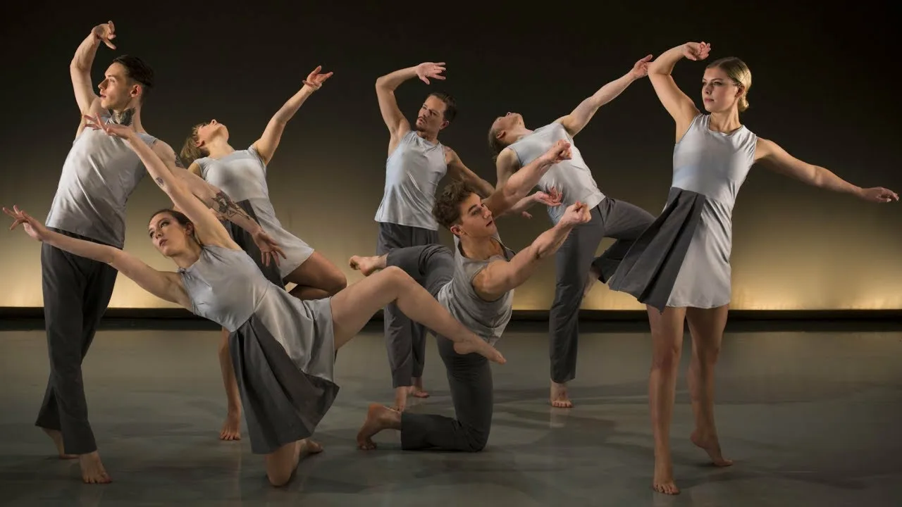
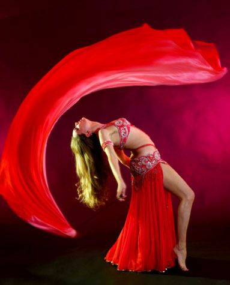
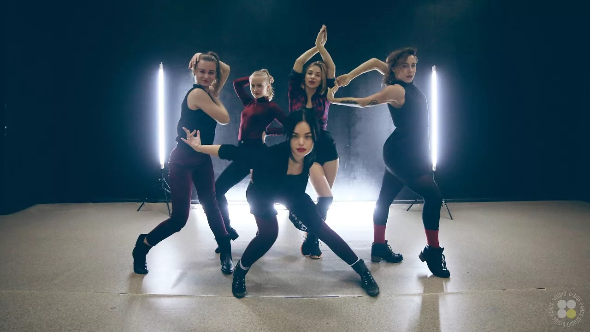
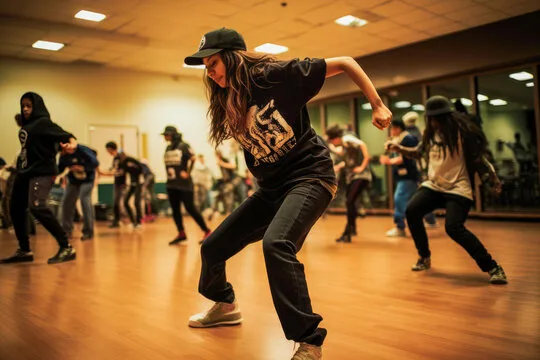

Здесь нет строгих правил: есть только ваше тело, музыка и эмоции. Контемпорари объединяет элементы классического балета, модерна, йоги и импровизации — чтобы вы научились слушать себя и выражать чувства через движение.
Подходит для любого уровня подготовки. Приходите — и откройте новый язык общения с миром!

Восточные танцы — искусство женственности, грации и внутренней силы.
Плавные движения бёдер, волнообразные руки, завораживающая игра корпуса — в восточных танцах каждая женщина находит способ выразить свою природную красоту и уверенность.
Подходит для любого уровня подготовки. Форма одежды: удобная футболка, лосины или юбка, босиком или в носках. Первое занятие — бесплатно!

Вог — это стиль, рождённый в нью‑йоркских балрумах 1980‑х, где каждый выход был перформансом. Здесь важны не только движения, но и подача, взгляд, поза — вы не просто танцуете, а создаёте образ.
Подходит для всех, кто любит экспериментировать с образом и не боится быть в центре внимания. Первое занятие — бесплатно!
Это не просто хореография — это про уверенность, женственность и смелость быть в центре внимания. Здесь вы научитесь грациозно двигаться на каблуках под зажигательные треки поп‑музыки, R&B и хип‑хопа.
Подходит для девушек, готовых к экспериментам. Первое занятие — со скидкой 50 %!

Хип‑хоп — это не просто танец, а целая культура, зародившаяся в 1970‑х годах в Бронксе (Нью‑Йорк). Изначально как способ самовыражения молодёжи, сегодня он стал одним из самых популярных танцевальных стилей по всему миру.
Уровень: для начинающих и продолжающих (опыт танцев не обязателен).
Форма одежды: удобная спортивная одежда (широкие штаны или легинсы, футболка/толстовка), кроссовки с амортизирующей подошвой.
Для перехода на главную страницу нажми СЮДА
{kind=link}